Capítulo 3 Gráficos.
3.1 Tidyverse para gráficos: ggplot2.
R, en su instalación básica, cuenta con funciones destinadas a crear gráficos y, de este modo, visualizar nuestros datos a fin de generar información y extraer conclusiones de un modo sencillo. No obstante, estas funciones, a veces, se quedan “cortas”, o requieren de un complejo y/o extenso código. Esta es la razón por la que en el Tidyverse se incluyó un paquete específico destinado a la construcción de gráficos de un modo flexible y amigable. Recordemos que el Tidyverse es un conjunto de paquetes con una filosofía común, como es el uso de ciertas estructuras gramaticales, que facilitan muchas de las tareas y análisis que podrían hacerse con el lenguaje R estándar.
Este paquete destinado a la producción de gráficos es {ggplot2}, que proporciona unas herramientas muy flexibles para visualizar conjuntos de datos. A continuación, se expondrán los fundamentos de la sintaxis de {ggplot2} y se indicará cómo construir algunos de los gráficos más habituales.
Para ilustrar la creación de gráficos, vamos a suponer que trabajamos dentro de un proyecto que hemos creado previamente, de nombre “explora”. Dentro de la carpeta del proyecto guardaremos el script llamado “explora_ggplot2.R” y el archivo de Microsoft® Excel® llamado “eolica_100.xlsx”.
Si abrimos este último archivo, comprobaremos que se compone de tres hojas. La primera muestra un aviso sobre el uso de los datos; la segunda recoge la descripción de las variables consideradas; y la tercera (hoja “Datos”) guarda los datos que debemos importar desde R-Studio. Estos datos se corresponden con diferentes variables económico-financieras de las 100 empresas productoras de electricidad mediante generación eólica con mayor volumen de activo total.
Tras abrir el script “explora_ggplot2.R” e el editor de R-Studio, observaremos que la primera línea / instrucción es:
La instrucción tiene como objeto limpiar el Environment (memoria) de objetos de anteriores sesiones de trabajo.
Para importar los datos que hay en la hoja “Datos” del archivo de Microsoft® Excel® llamado “eolica_100.xlsx”, ejecutaremos el código:
## NOMBRE RES ACTIVO FPIOS
## Length:100 Min. : -5661.5 Min. : 24944 Min. : -77533
## Class :character 1st Qu.: 670.2 1st Qu.: 34437 1st Qu.: 2305
## Mode :character Median : 2114.7 Median : 46896 Median : 11936
## Mean : 11477.3 Mean : 274756 Mean : 123743
## 3rd Qu.: 3951.2 3rd Qu.: 85542 3rd Qu.: 28292
## Max. :727548.0 Max. :13492812 Max. :6904824
##
## RENECO RENFIN LIQUIDEZ MARGEN
## Min. :-3.446 Min. :-359.773 Min. : 0.0140 Min. :-2248.157
## 1st Qu.: 1.421 1st Qu.: 2.556 1st Qu.: 0.6567 1st Qu.: 12.126
## Median : 4.144 Median : 15.326 Median : 1.0650 Median : 26.618
## Mean : 5.294 Mean : 17.243 Mean : 2.7214 Mean : 3.583
## 3rd Qu.: 7.904 3rd Qu.: 31.307 3rd Qu.: 1.6078 3rd Qu.: 39.580
## Max. :35.262 Max. : 588.190 Max. :128.4330 Max. : 400.899
##
## SOLVENCIA APALANCA MATRIZ DIMENSION
## Min. :-40.74 Min. :-8254.11 Length:100 Length:100
## 1st Qu.: 4.71 1st Qu.: 16.13 Class :character Class :character
## Median : 16.65 Median : 161.97 Mode :character Mode :character
## Mean : 27.57 Mean : 345.03
## 3rd Qu.: 45.59 3rd Qu.: 623.13
## Max. : 99.08 Max. :12244.35Podemos observar cómo, en el Environment, ya aparece un data frame que se llama “eolica_100”, y contiene 12 columnas. R ha considerado la primera columna como una variable de tipo cualitativo o atributo. En realidad, esa columna no es una variable, sino que está formada por los nombres de los diferentes casos u observaciones (filas). Para evitar que R tome la columna de los nombres de los casos como una variable más, podemos redefinir nuestro data frame diciéndole que considere esa primera columna como el conjunto de los nombres de los individuos o casos:
En la línea anterior, hemos asignado al data frame “eolica_100” los propios datos de “eolica_100”; pero indicando que la primera columna no es una variable; sino que contiene el nombre de los casos. Si hacemos ahora un summary():
## RES ACTIVO FPIOS RENECO
## Min. : -5661.5 Min. : 24944 Min. : -77533 Min. :-3.446
## 1st Qu.: 670.2 1st Qu.: 34437 1st Qu.: 2305 1st Qu.: 1.421
## Median : 2114.7 Median : 46896 Median : 11936 Median : 4.144
## Mean : 11477.3 Mean : 274756 Mean : 123743 Mean : 5.294
## 3rd Qu.: 3951.2 3rd Qu.: 85542 3rd Qu.: 28292 3rd Qu.: 7.904
## Max. :727548.0 Max. :13492812 Max. :6904824 Max. :35.262
##
## RENFIN LIQUIDEZ MARGEN SOLVENCIA
## Min. :-359.773 Min. : 0.0140 Min. :-2248.157 Min. :-40.74
## 1st Qu.: 2.556 1st Qu.: 0.6567 1st Qu.: 12.126 1st Qu.: 4.71
## Median : 15.326 Median : 1.0650 Median : 26.618 Median : 16.65
## Mean : 17.243 Mean : 2.7214 Mean : 3.583 Mean : 27.57
## 3rd Qu.: 31.307 3rd Qu.: 1.6078 3rd Qu.: 39.580 3rd Qu.: 45.59
## Max. : 588.190 Max. :128.4330 Max. : 400.899 Max. : 99.08
##
## APALANCA MATRIZ DIMENSION
## Min. :-8254.11 Length:100 Length:100
## 1st Qu.: 16.13 Class :character Class :character
## Median : 161.97 Mode :character Mode :character
## Mean : 345.03
## 3rd Qu.: 623.13
## Max. :12244.35Comprobamos que ya no aparece NOMBRE como variable y que, en el Environment, se recoge el data frame “eolica_100” con 100 casos y con 11 variables.
3.2 Gráficos de una variable: histogramas, gráficos de densidad, gráficos de caja o boxplots.
A continuación, cargaremos el paquete {ggplot2}. Si nunca antes se ha utilizado, cuando lo intentemos activar con la función library() nos dará un error, advirtiendo que previamente hay que instalarlo. En ese caso, iremos a la ventana inferior-derecha de R-Studio y pulsaremos en la pestaña Packages, luego en Install, y emergerá una ventana donde dejaremos el “repositorio” que viene por defecto y, en el campo Packages, escribiremos el nombre del “paquete” (en nuestro caso ggplot2). Una vez descargado el “paquete”, podremos ejecutar el código sin problemas:
La primera instrucción para crear un gráfico con el paquete {ggplot2} es ggplot(). A continuación, entre paréntesis, se deberán aportar una serie de argumentos o informaciones. Estas informaciones irán definiendo el gráfico en mayor o menor detalle.
En realidad, lo que se hace es definir el conjunto de datos a representar (que suelen estar contenidos en un data frame, o en varios), y a partir de ellos se van añadiendo capas gráficas o “geoms”, que son caracterizadas con ciertos atributos estéticos (”aesthetics”, o “aes”).
3.2.1 Histograma.
Uno de los gráficos indispensables para tener una idea de la distribución de frecuencias que siguen los casos (en nuestro ejemplo, las empresas eólicas) con relación a una variable métrica es el histograma. Vamos a construir un histograma para la variable de rentabilidad económica, RENECO. El código será:
Como acabamos de decir, en primer lugar viene el comando ggplot(), seguido de unos paréntesis que recogen ciertas informaciones:
“data =”, seguido de la fuente que almacena los datos a graficar (en nuestro caso, el data frame “eolica_100”).
“map =”, o “mapeo”, que define los aspectos del gráfico que dependen del valor de alguna o algunas variables. Siempre que alguna característica del gráfico no sea “fija”, sino que dependa de los valores que toma una variable, tal variable deberá ir indicada dentro de un elemento estético (aes). En el código de ejemplo, el elemento aes sirve para indicar que las coordenadas del eje x que toman los casos a representar, dependen de los valores de la variable RENECO.
Para indicar que las siguientes líneas continúan con el código del gráfico, se añade al final de esta línea el símbolo “+”.
En la segunda línea, se establece el tipo de gráfico que se va a realizar, mediante la inclusión de un elemento geom. Para decir que lo que queremos construir es un histograma, el elemento geom será geom_histogram().
El resultado del código anterior es el siguiente gráfico:
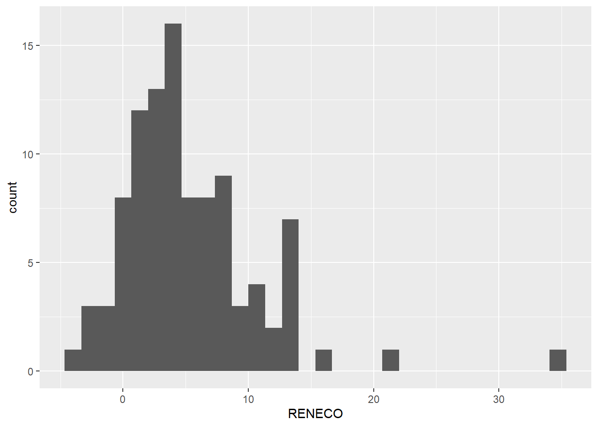
Por supuesto, {ggplot2} permite personalizar y refinar la apariencia del gráfico. Uno de los aspectos que nos puede interesar modificar es el número de intervalos en los que queda dividido el rango de valores que puede tomar la variable (“grosor” de las barras), o bins. Por defecto, el número es 30. Para incrementar este número de barras a 40, por ejemplo, añadiremos en la línea del geom el argumento “bins =”:
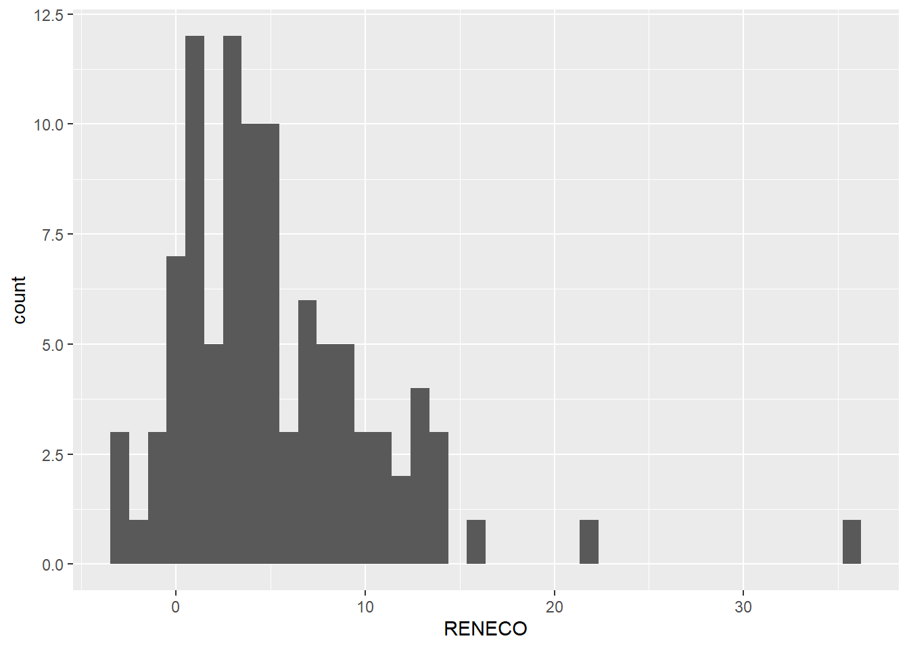
A continuación, vamos a modificar el color de las barras. Para el borde de estas, se utiliza el argumento “colour =”; y, para el relleno, “fill =”. Además, vamos a mejorar la presentación del gráfico añadiéndole un título y un subtítulo, y unas etiquetas en los ejes. Hay que prestar atención a los signos “+” incluidos para que R entienda que el código de la siguiente línea pertenece al mismo gráfico que estamos diseñando:
ggplot(data = eolica_100, map = aes(x = RENECO)) +
geom_histogram(bins = 40, colour = "red", fill = "orange") +
ggtitle("RENTABILIDAD ECONÓMICA", subtitle = "100 empresas eólicas")+
xlab("Rentabilidad Económica (%)") +
ylab("Frecuencias")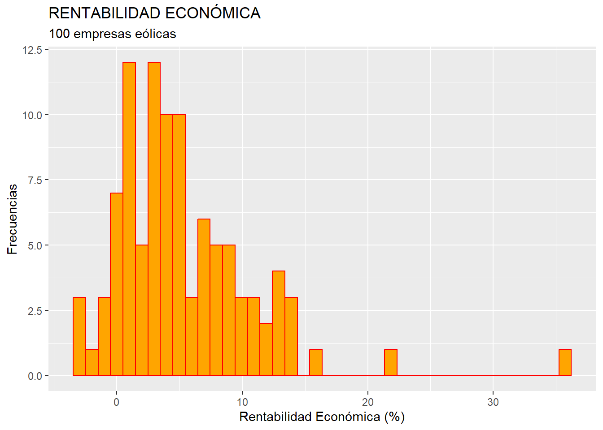
Puede ser que nos interese diferenciar los casos según grupos preestablecidos. Por ejemplo, entre las variables de nuestro data frame “eolica_100”, existe una variable categórica, atributo o factor, denominada DIMENSION, que clasifica a las 100 empresas en “GRANDE”, “MEDIO” o “PEQUEÑO” atendiendo al tamaño del grupo empresarial al que pertenecen (medido en número de empresas). Lo que vamos a hacer es crear, en el mismo gráfico, un histograma de la rentabilidad económica, pero para cada categoría de DIMENSION. Para ello, habrá que incluir esta variable categórica en el “mapeo”, en concreto mediante el argumento “fill =”. Es necesario hacerlo dentro del elemento aes, ya que el resultado (color de grupo de empresas) depende del valor que toma la variable DIMENSION para cada caso o empresa:
ggplot(data = eolica_100, map = aes(x = RENECO, fill = DIMENSION)) +
geom_histogram(bins = 60, colour = "red") +
scale_fill_brewer(palette = "Oranges") +
ggtitle("RENTABILIDAD ECONÓMICA", subtitle = "100 empresas eólicas")+
xlab("Rentabilidad Económica (%)") +
ylab("Frecuencias")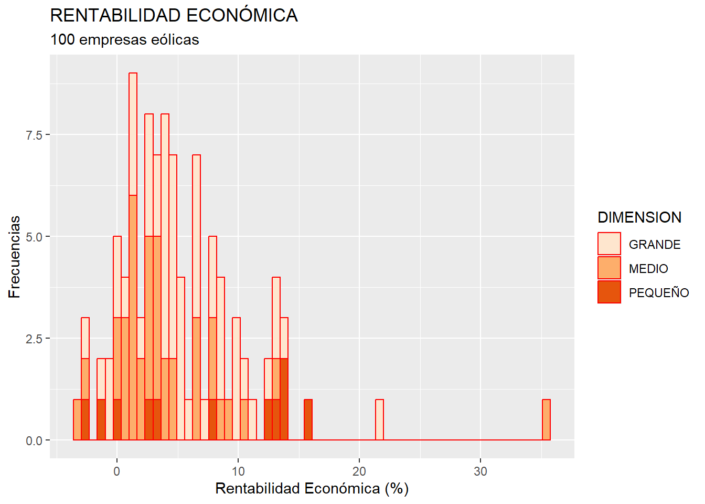
Como puede comprobarse, se superponen los tres histogramas, con tres colores diferentes, dependiendo de la dimensión considerada. Además, aparece, al lado derecho del gráfico, una leyenda que detalla qué color se asocia a cada uno de los grupos de empresas. La función scale_fill_brewer() nos permite personalizar la paleta de colores a utilizar (para ver las paletas disponibles, podemos consultar esta sección de (Wickham 2021).
3.2.2 Gráfico de densidad.
Un gráfico parecido al histograma es el de densidad. Un gráfico de densidad estima la función de densidad de probabilidad empírica de la variable representada. En realidad, podemos considerarlo como un histograma “suavizado”. Probemos a ejecutar este código:
ggplot(data = eolica_100, map = aes(x = RENECO)) +
geom_density(colour = "red", fill = "orange") +
ggtitle("RENTABILIDAD ECONÓMICA", subtitle = "100 empresas eólicas")+
xlab("Rentabilidad Económica (%)") +
ylab("Densidad")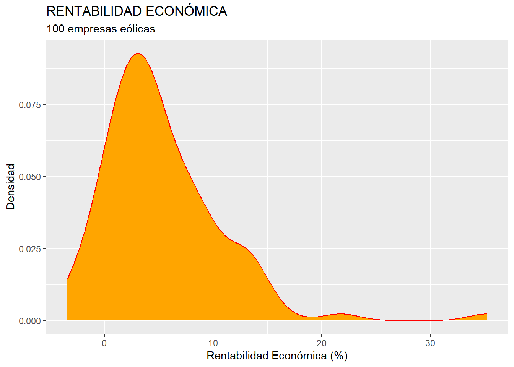
En el código se observa la utilización del tipo de gráfico geom_density(). Además, desaparece el número de intervalos o bins, y se puede dotar a la función de densidad estimada de un color en su borde (colour=), y de un color de relleno (fill=).
Como en casos anteriores, se puede crear una función de densidad estimada para cada grupo de empresas, eliminando las características, colour= y fill= del bloque del geom, y añadiéndolas en el “mapeo”, dentro del aes():
ggplot(data = eolica_100, map = aes(x = RENECO, fill = DIMENSION)) +
geom_density(colour = "red", alpha = 0.70, ) +
scale_fill_brewer(palette = "Oranges") +
ggtitle("RENTABILIDAD ECONÓMICA", subtitle = "100 empresas eólicas")+
xlab("Rentabilidad Económica (%)") +
ylab("Densidad")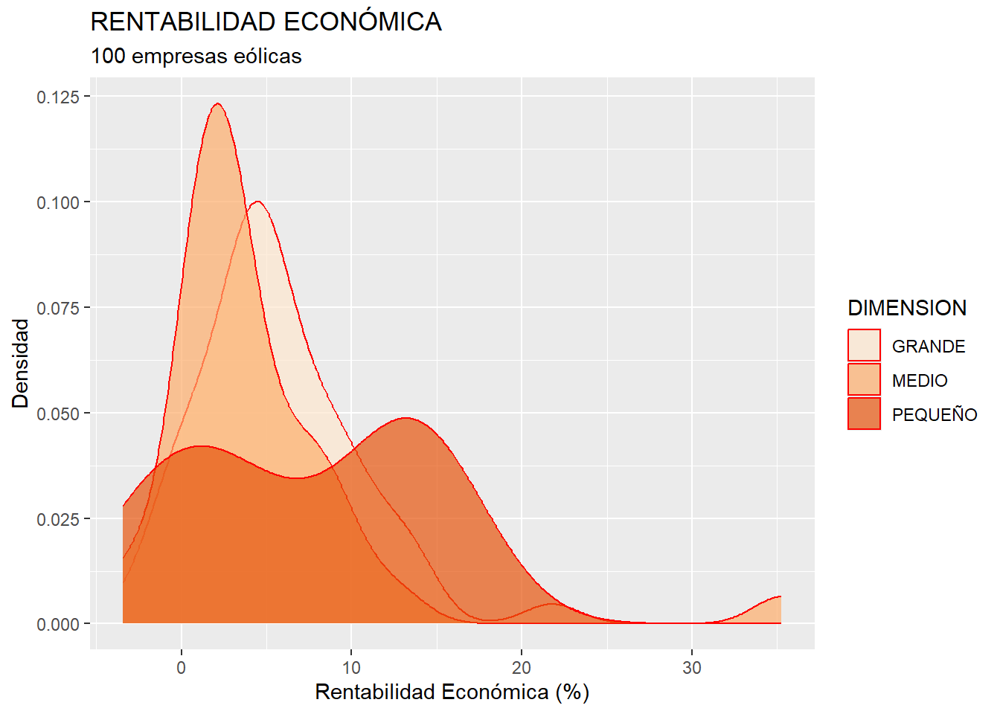
En efecto, el argumento fill= ha pasado a integrarse, en el “mapeo”, dentro de un elemento aes, ya que el color de relleno va a variar dependiendo del grupo de pertenencia de la empresa (variable DIMENSION). Por otro lado, en el geom se ha añadido el argumento alpha=. Esta información consiste en un número de 0 a 1 que gradúa el grado de transparencia / opacidad de los rellenos de las figuras (en este caso las funciones de densidad estimadas) incluidas en los gráficos.
3.2.3 Gráfico de caja o Box-Plot.
Un tipo muy interesante de gráfico es el de “caja” (box-plot), que informa de la dispersión de una variable. Fijémonos en el siguiente código:
ggplot(data = eolica_100, map = (aes(y = RENECO))) +
geom_boxplot(fill= "orange") +
ggtitle("RENTABILIDAD ECONÓMICA", subtitle = "100 empresas eólicas") +
ylab("Rentabilidad Económica (%)")Puede observarse cómo en el “mapeo” se fija la variable que va a determinar las coordenadas del eje “y”. Como es una variable, hay que incluirla en el “mapeo” mediante una característica aes. El geom o tipo de gráfico es geom_boxplot(), y en este caso no le hemos añadido ninguna característica específica. Las últimas líneas configuran los títulos del gráfico y del eje “y”. El resultado de ejecutar el código es el siguiente gráfico:
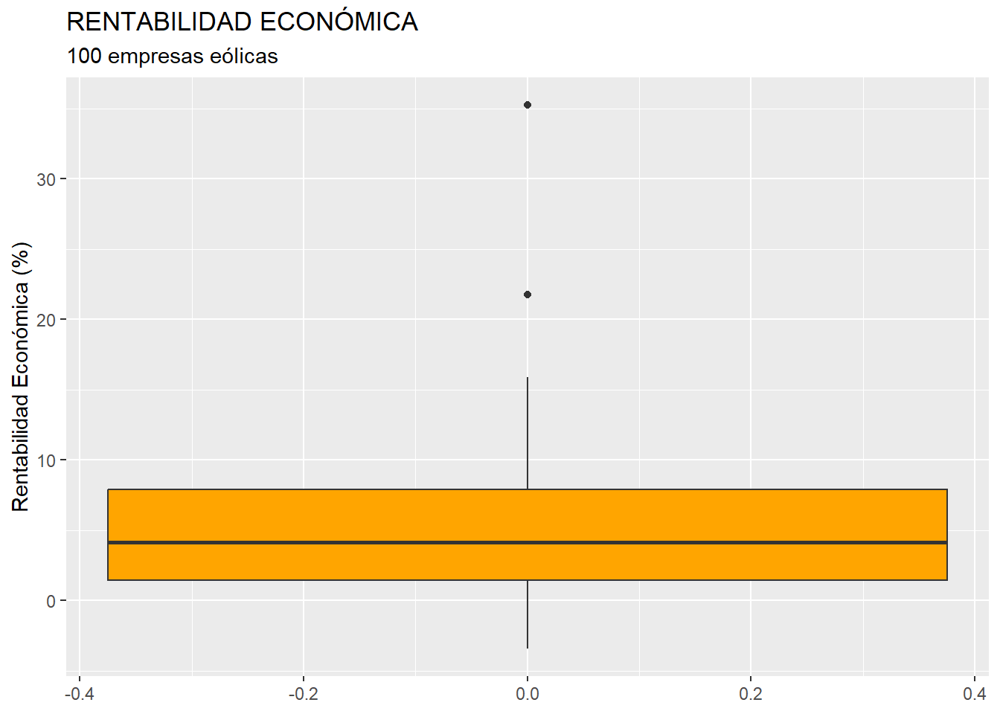
El gráfico se caracteriza por una “caja” (rectángulo) central. Esta caja está limitada por el primer y tercer cuartil, luego recoge el 50% de los casos con una rentabilidad económica superior al 25% de los casos con menor rentabilidad, y por debajo del 25% de los casos con la rentabilidad más alta. Así, la altura de la caja es la diferencia entre los cuartiles tercero y primero, que es lo que se denomina “rango intercuartílico” (IQR por las siglas en inglés). La caja, a su vez, está dividida en dos zonas por una línea horizontal, que es la mediana de la distribución: la rentabilidad económica que divide a los casos en dos grupos con el mismo número de casos, uno con los casos de mayor rentabilidad, y otro con los casos de menor rentabilidad.
Por encima y por debajo de la caja se disponen dos segmentos (llamados “bigotes”). Estos “bigotes” recogen los casos con valores en la variable inferiores al primer cuartil (comenzando por la base de la caja, hacia abajo), o superiores al tercer cuartil (comenzando por el techo de la caja, hacia arriba); y que están a menos de 1.5 veces la altura de la caja. Los casos con valores de rentabilidad inferiores al primer cuartil (por abajo) y superiores al tercero (por arriba), que están alejados de la caja en más de 1.5 veces la altura de esta, se indican con puntos, y se corresponden con los casos conocidos como casos atípicos o outliers. La identificación de los outliers es una fase muy importante a la hora de aplicar algunas técnicas estadísticas.
En esta práctica, comprobamos cómo, en el caso de la rentabilidad económica (RENECO), existen dos outliers, es decir, dos casos que presentan sendas rentabilidades anormalmente elevadas (más de un 20%).
{ggplot2} permite integrar en el gráfico medidas estadísticas y otros cálculos. Por ejemplo, en el box-plot se representa el valor de la mediana; pero no el de la media. Si queremos incluir el valor de la media (u otro estadístico), podemos calcularlo e integrarlo con la función stat_summary(), algo parecido al summarise() de {dplyr}. El argumento fun = "mean" indica que la medida a calcular y representar es la media aritmética, el argumento geom = "point" el tipo de gráfico para representar esa medida (un punto). También hay otros argumentos opcionales. Para que funcione correctamente el código del gráfico, en el “mapeo” de la función ggplot() hay que añadir, dentro del aes(), x = “” (si no se hace, la ejecución dará un error en el que advierte de que falta el “aesthetics: x”):
ggplot(data = eolica_100, map = (aes(x = "", y = RENECO))) +
geom_boxplot(fill = "orange") +
stat_summary(fun = "mean",
geom = "point",
size = 3,
col = "darkblue") +
ggtitle("RENTABILIDAD ECONÓMICA", subtitle = "100 empresas eólicas") +
ylab("Rentabilidad Económica (%)")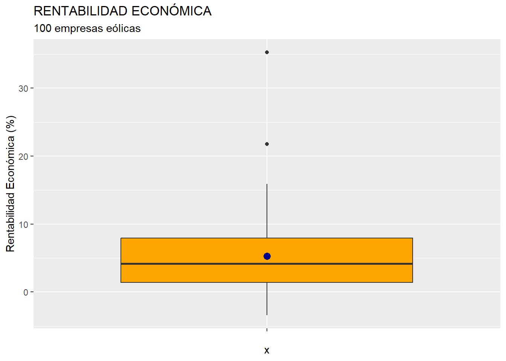
Se aprecia cómo el valor de la rentabilidad económica media se ha insertado como un punto azul oscuro grueso dentro del gráfico de caja (tiene un valor algo superior a la mediana).
Vamos a refinar el box-plot anterior. Por ejemplo, quizá nos pueda interesar crear un box-plot para cada grupo de empresas, según el tamaño del grupo empresarial de pertenencia (atributo DIMENSION). Esto lo conseguiremos con el código:
ggplot(data = eolica_100, map = (aes(x = DIMENSION, y = RENECO, fill = DIMENSION))) +
geom_boxplot() +
stat_summary(fun = "mean",
geom = "point",
size = 3,
col = "darkblue") +
stat_summary(fun = "mean",
geom = "line",
col = "darkblue",
map = (aes(group = TRUE))) +
scale_fill_brewer(palette = "Oranges") +
ggtitle("RENTABILIDAD ECONÓMICA", subtitle = "100 empresas eólicas") +
ylab("Rentabilidad Económica (%)")
Para construir una caja por categoría de la variable cualitativa o atributo DIMENSION, se ha incluido, en el “mapeo” de la primera línea, el eje x con la variable tal variable DIMENSION. Como, además, queremos que cada caja sea de un color diferente, hemos hecho que los colores de estas dependan de la variable DIMENSION; añadiendo en el aes() del “mapeo” la característica fill= (que se refiere al color de relleno de las cajas). También se ha incluido una línea con el scale_fill_brewer() para que los colores de las cajas consistan en diferentes tonalidades de naranjas.
En el ejemplo, el primer bloque de stat_summary() consigue puntear, para cada grupo de empresas, la media de RENECO en dicho grupo, en color azul oscuro. Para comparar mejor estas medias, se ha procedido a unir los puntos con unos segmentos o líneas de color azul oscuro, lo que se consigue con el segundo bloque de stat_summary(). La última línea de ese bloque, map = (aes(group = TRUE))), obliga a que las líneas vayan de una media a otra de los grupos (de punto azul oscuro a punto azul oscuro).
Como última extensión, se ha considerado que, a veces, es conveniente tener en cuenta la posición de cada caso individual dentro del gráfico. Una opción es utilizar una capa o bloque geom_jitter(). Con este geom se dispondrán, para cada grupo, los valores individuales de la variable RENECO; y para que estos, en su caso, no se solapen, se situarán un poco más a la izquierda o a la derecha, de modo aleatorio. Como los outliers son ya casos individuales, para que no se dupliquen con los provenientes del “jitter”, se indicará en el geom_boxplot() que, en ese bloque gráfico, no se señalen los outliers. Esto se conseguirá con el argumento outlier.shape = NA. El código, en definitiva, será:
ggplot(data = eolica_100, map = (aes(x = DIMENSION, y = RENECO, fill = DIMENSION))) +
geom_boxplot(outlier.shape = NA) +
stat_summary(fun = "mean",
geom = "point",
size = 3,
col = "darkblue") +
stat_summary(fun = "mean",
geom = "line",
col = "darkblue",
map = (aes(group = TRUE))) +
geom_jitter(width = 0.1,
size = 1,
col = "darkred",
alpha = 0.40) +
scale_fill_brewer(palette = "Oranges") +
ggtitle("RENTABILIDAD ECONÓMICA", subtitle = "100 empresas eólicas") +
ylab("Rentabilidad Económica (%)")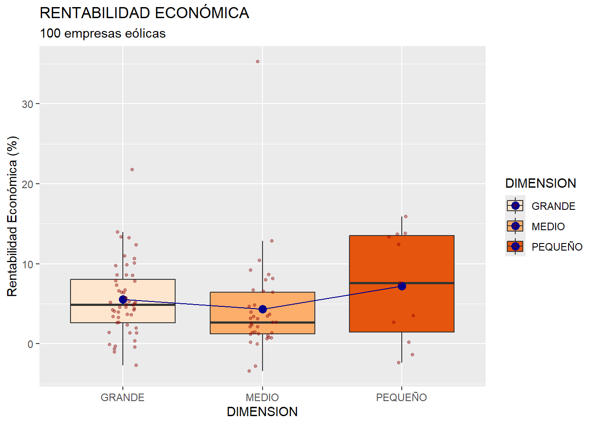
Como puede observarse, el geom_jitter() proporciona, en cada caja, la nube de casos (empresas) individuales, en cuanto a la rentabilidad económica (incluidos los outliers). Las características de estos puntos (amplitud del desplazamiento lateral “aleatorio”, tamaño, color, opacidad) se controlan con diversos argumentos (width=, size=, col=, alpha=).
3.3 Gráficos de dos variables.
3.3.1 Gráfico de dispersión o scatterplot.
Pasamos ahora a comentar un tipo de gráfico muy común cuando trabajamos con dos variables métricas: los gráficos de dispersión (o scatterplots). En este tipo de gráficos, cada variable ocupa un eje (x o y), y los puntos internos al gráfico representan los diversos casos u observaciones.
Como ejemplo, vamos a crear un gráfico de dispersión que represente las empresas eólicas en función de su rentabilidad económica (RENECO) y de su rentabilidad financiera (RENFIN). El código es el siguiente:
ggplot(data = eolica_100, map = (aes(x = RENECO, y = RENFIN))) +
geom_point(color = "red", size = 2, alpha = 0.7) +
ggtitle("RENTABILIDAD ECONÓMICA vs RENTABILIDAD FINANCIERA", subtitle = "100 empresas eólicas") +
xlab("Rentabilidad Económica (%)") +
ylab("Rentabilidad Financiera (%)")El resultado es el siguiente gráfico:
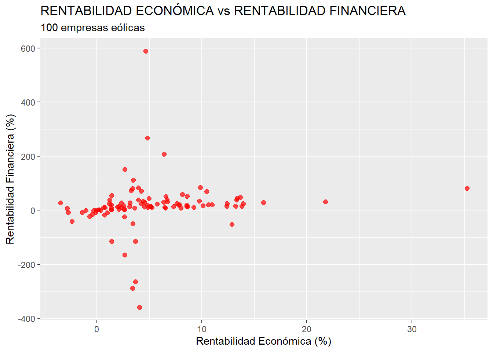
Vamos a refinar el gráfico algo más. En primer lugar, puede ser interesante distinguir entre los tipos de empresas, según el tamaño del grupo empresarial al que pertenecen ( variable DIMENSION). Para ello, podemos poner el color de los puntos en el “mapeo”, en función de la variable DIMENSION:
ggplot(data = eolica_100, map = (aes(x = RENECO,
y = RENFIN,
col = DIMENSION))) +
geom_point(size = 2, alpha = 0.7) +
ggtitle("RENTABILIDAD ECONÓMICA vs FINANCIERA",
subtitle = "100 empresas eólicas") +
xlab("Rentabilidad Económica (%)") +
ylab("Rentabilidad Financiera (%)")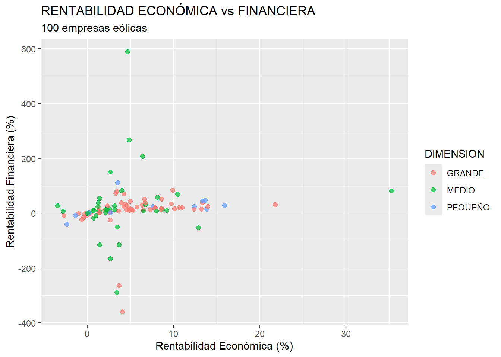
En los dos gráficos anteriores pueden observarse puntos (casos) candidatos a ser outliers para cada una de las dos variables analizadas. En el caso de RENECO, ya se pudo advertir esta circunstancia al construir los boxplots.
Por otro lado, podría ser interesante complementar el gráfico con información sobre las dos variables por separado, es decir, con información sobre las distribuciones marginales. Existe un paquete complementario a {ggplot2}, llamado {ggExtra}, que puede ayudar fácilmente a este cometido. Para ello, hemos de activar dicho paquete con library() (si no ha sido previamente instalado, habrá que hacerlo con anterioridad). El segundo paso consistirá en asignar nuestro scatterplot, diseñado con la función ggplot(), a un objeto con el nombre que queramos, por ejemplo, “scatter_plus”. Luego, ese objeto, que contiene nuestro gráfico, entrará como argumento en la función de {ggExtra} llamada ggMarginal(), como se muestra en el siguiente código:
library ("ggExtra")
scatter_plus <- ggplot(data = eolica_100, map = (aes(x = RENECO,
y = RENFIN,
col = DIMENSION))) +
geom_point(size = 2, alpha = 0.7) +
ggtitle("RENTABILIDAD ECONÓMICA vs FINANCIERA",
subtitle = "100 empresas eólicas") +
xlab("Rentabilidad Económica (%)") +
ylab("Rentabilidad Financiera (%)")
ggMarginal(scatter_plus, type = "histogram", groupColour = T,
groupFill = T, position = "identity", alpha = 0.5)Con el código anterior, apreciamos cómo se añaden los histogramas de cada variable, RENECO y RENFIN, en los márgenes del gráfico:
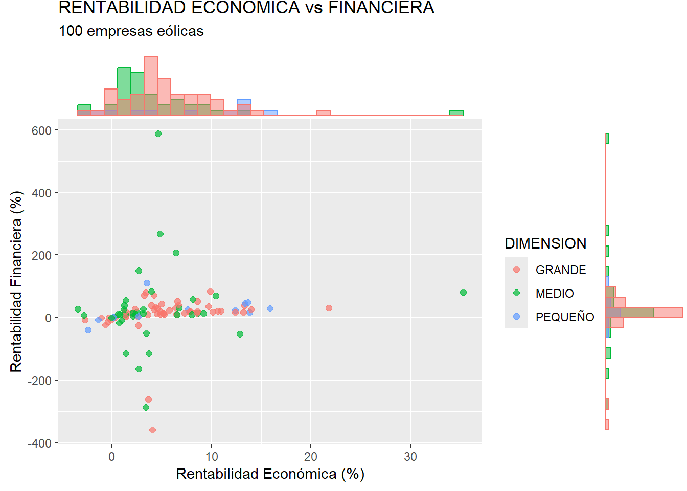
Conviene apuntar que el argumento position = “identity” hace que las barras del histograma estén perfectamente alineadas con los datos del gráfico de dispersión, sin ningún tipo de desplazamiento.
Adicionalmente, los diámetros de los puntos de los diversos casos podrían contener también información, haciéndolos proporcionales a una tercera variable. Por ejemplo, podrían ser proporcionales al nivel de solvencia (variable SOLVENCIA). Para ello, ejecutaríamos el código:
scatter_plus <- ggplot(data = eolica_100, map = (aes(x = RENECO,
y = RENFIN,
col = DIMENSION,
size = SOLVENCIA))) +
geom_point(alpha = 0.7) +
ggtitle("RENTABILIDAD ECONÓMICA vs FINANCIERA",
subtitle = "100 empresas eólicas") +
xlab("Rentabilidad Económica (%)") +
ylab("Rentabilidad Financiera (%)")
ggMarginal(scatter_plus, type = "histogram", groupColour = T,
groupFill = T, position = "identity", alpha = 0.5)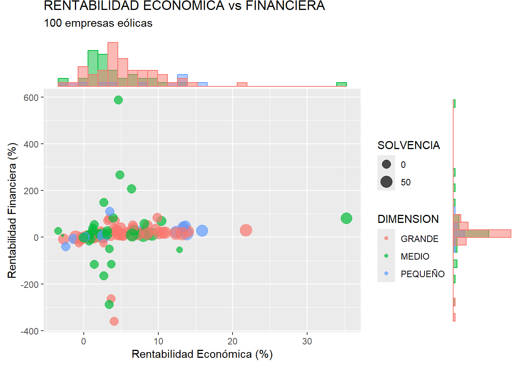
En el código anterior, puede comprobarse que la característica size = sube del bloque de geom al “mapeo” (incluido en el aes), debido a que el diámetro de cada punto ya no va a ser un parámetro fijo, sino que va a depender de la magnitud de la variable SOLVENCIA.
Finalmente, podría ser útil, en algunos gráficos, añadir una etiqueta (label) a cada punto, para identificar el caso concreto al que representa. Si bien en esta práctica, el elevado número de casos y el extenso nombre de las empresas hacen poco claro el uso de estas etiquetas, vamos a añadirlas por motivos pedagógicos. Para ello, se añadirá un bloque geom llamado geom_text(), con una información label = que se hace depender de valores que cambian (en concreto, el nombre de los casos, es decir, de las filas del data frame), por lo que tendrá que integrarse en una característica aes:
scatter_plus <- ggplot(data = eolica_100, map = (aes(x = RENECO,
y = RENFIN,
col = DIMENSION,
size = SOLVENCIA))) +
geom_point(alpha = 0.7) +
geom_text(aes(label=row.names(eolica_100)), size=2, color="black", alpha = 0.7) +
ggtitle("RENTABILIDAD ECONÓMICA vs FINANCIERA",
subtitle = "100 empresas eólicas") +
xlab("Rentabilidad Económica (%)") +
ylab("Rentabilidad Financiera (%)")
ggMarginal(scatter_plus, type = "histogram", groupColour = T,
groupFill = T, position = "identity", alpha = 0.5)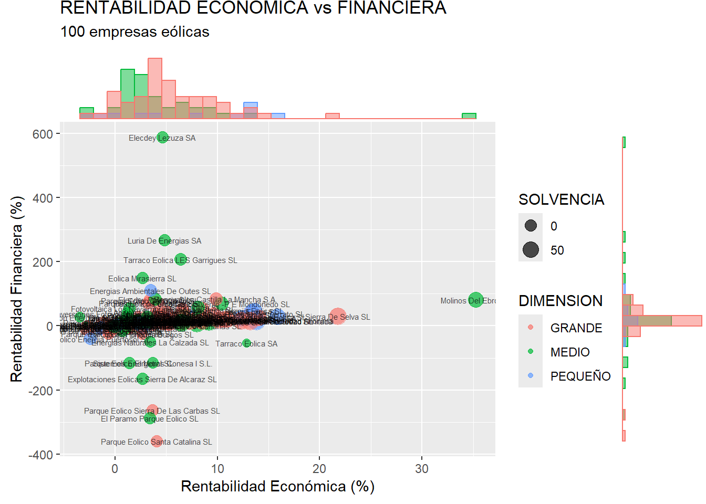
Las etiquetas de los casos pueden refinarse algo más mediante la función geom_label_repel(), disponible al cargar el paquete {ggrepel}:
library(ggrepel)
scatter_plus <- ggplot(data = eolica_100, map = (aes(x = RENECO,
y = RENFIN,
col = DIMENSION,
size = SOLVENCIA))) +
geom_point(alpha = 0.7) +
geom_label_repel(aes(label = row.names(eolica_100)),
size = 2,
color = "black",
alpha = 0.5) +
ggtitle("RENTABILIDAD ECONÓMICA vs FINANCIERA",
subtitle = "100 empresas eólicas") +
xlab("Rentabilidad Económica (%)") +
ylab("Rentabilidad Financiera (%)")
ggMarginal(scatter_plus, type = "histogram", groupColour = T,
groupFill = T,
position = "identity", alpha = 0.5)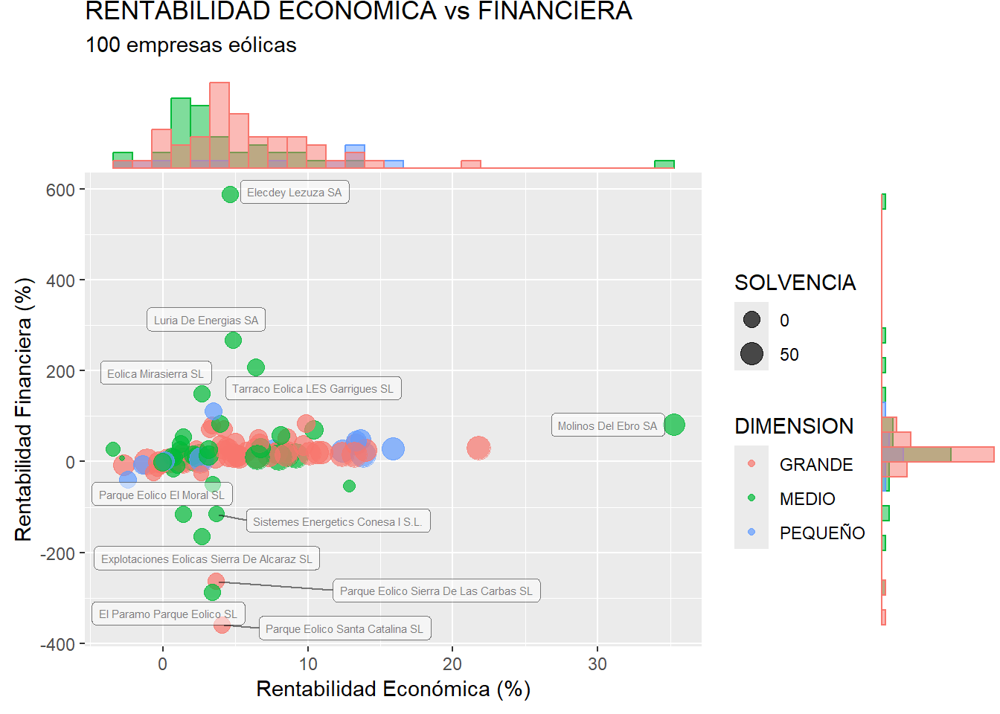
La ventaja de este gráfico, como se puede apreciar, es que se omiten las etiquetas superpuestas, si bien existe el riesgo de que se omitan una gran cantidad de estas.
3.4 Materiales para realizar las prácticas del capítulo.
En esta sección se muestran los links de acceso a los diferentes materiales (scripts, datos…) necesarios para llevar a cabo los contenidos prácticos del capítulo.
Datos (en formato Microsoft (R) Excel (R)):
- eolica_100.xlsx (obtener aquí)
Scripts:
- explora_ggplot2.R (obtener aquí)